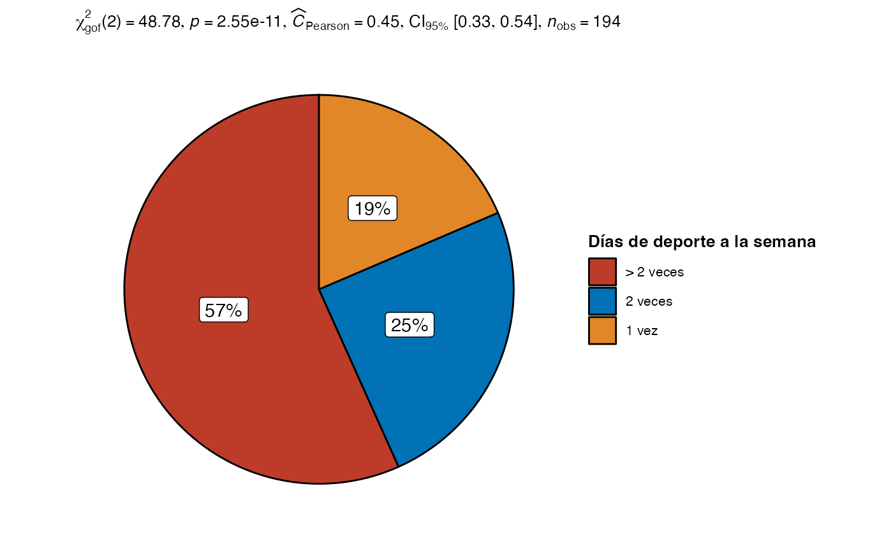

Dentro del paquete seasonalSensibility se encuentran los
datos usados para el análisis exploratorio bajo el nombre de
dataset. Al cargar los datos, estos se vuelven disponibles
en el ambiente de trabajo.
# Si no cargamos el paquete, los datos no están disponibles
exists("dataset")
#> [1] FALSE
# Cargamos nuestro paquete
library(seasonalSensitivity)
# Esto hace que los datos queden disponibles para ser usados
exists("dataset")
#> [1] TRUEEstructura de los datos
En primera instancia podemos notar que los datos se componen de 358
filas y 18 columnas, las cuales constituyen las variables descritas en
la documentación de los datos (ver documentación:
seasonalSensitivity::dataset)
En relación a la estadística.
Los tamaños del efecto (i.e., effect sizes) usados para las
pruebas estadísticas vienen del paquete effectsize.
Puedes revisar con más detalle la interpretación
de los estadísticos usados en esta guía.
Variables sociodemográficas
sex <- dataset[, table(genero) |> chisq.test()]
age <- dataset[, table(edad) |> chisq.test()]| Característica | N = 3581 |
|---|---|
| Genero | |
| Masculino | 201 (56%) |
| Femenino | 156 (44%) |
| Desconocido | 1 |
| Edad | |
| 18-35 | 200 (56%) |
| > 35 | 158 (44%) |
| 1 n (%) | |
Deporte y ejercicio reportado

| Característica | N = 3581 |
|---|---|
| Realiza deporte | |
| Si | 194 (55%) |
| No | 159 (45%) |
| Desconocido | 5 |
| Sesiones por semana | |
| 1 vez | 36 (19%) |
| 2 veces | 48 (25%) |
| > 2 veces | 110 (57%) |
| Desconocido | 164 |
| Intensidad deporte | |
| Baja | 31 (16%) |
| Media | 126 (65%) |
| Alta | 37 (19%) |
| Desconocido | 164 |
| Duracion sesion (minutos) | 180 (90, 300) |
| Desconocido | 164 |
| 1 n (%); Mediana (RIQ) | |
Sensibilidad estacional
En el caso de la sensibilidad estacional nos encontramos con las
variables patrón de verano (ss_patron_verano) e invierno
(ss_patron_invierno), tipo de patron estacional
(ss_patron_tipo), la clasificación del puntaje de
estacionalidad (ss_index) y la clasificación de severidad
de estacionalidad (ss_severidad).
| Característica | N = 3581 |
|---|---|
| Patron de verano | 5.0 (2.0, 7.0) |
| Patron de invierno | 2.00 (0.00, 4.00) |
| Tipo de patron | |
| Verano | 3 (0.9%) |
| Invierno | 96 (29%) |
| Mixto | 232 (70%) |
| Desconocido | 27 |
| Seasonal Score Index | |
| Normal | 86 (24%) |
| Winter blues | 55 (15%) |
| SAD | 216 (61%) |
| Desconocido | 1 |
| Severidad estacionaldiad | |
| No es problema | 42 (13%) |
| Leve | 72 (23%) |
| Moderado | 58 (18%) |
| Importante | 44 (14%) |
| Severo | 57 (18%) |
| Grave | 43 (14%) |
| Desconocido | 42 |
| 1 Mediana (RIQ); n (%) | |
Bienestar de Ryff
Último en nuestra lista de variables se encuentran aquellas
correspondientes al cuestionario de bienestar de Riff, en donde
encontramos los dominios de Autoaceptación
(riff_autoaceptacion), Relaciones positivas
(riff_relaciones_positivas), Autonomía
(riff_autonomia), Dominio del entorno
(riff_dominio_entorno), Crecimiento personal
(riff_crecimiento_personal) y Propósito en la vida
(riff_proposito_vida).
| Característica | N = 3581 |
|---|---|
| Autoaceptacion | 28.0 (24.0, 32.0) |
| Relaciones Positivas | 26 (21, 30) |
| Autonomia | 38 (32, 42) |
| Dominio Entorno | 25.0 (21.0, 27.0) |
| Crecimiento Personal | 34.0 (30.0, 38.0) |
| Proposito Vida | 27.0 (24.0, 30.0) |
| 1 Mediana (RIQ) | |